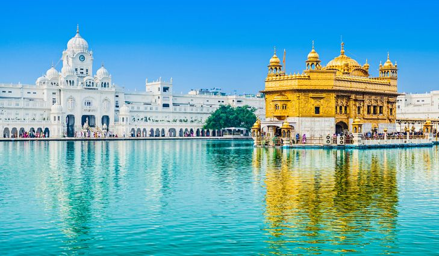
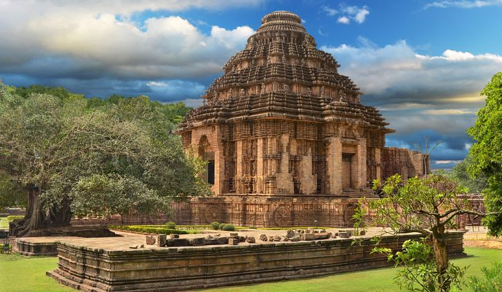
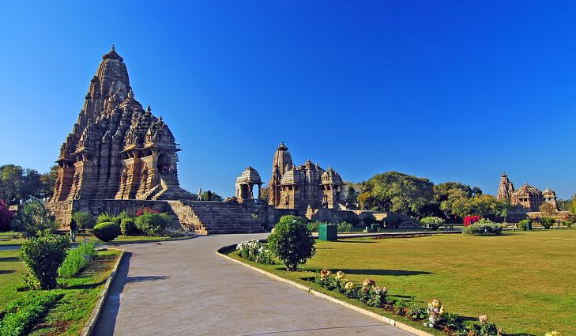
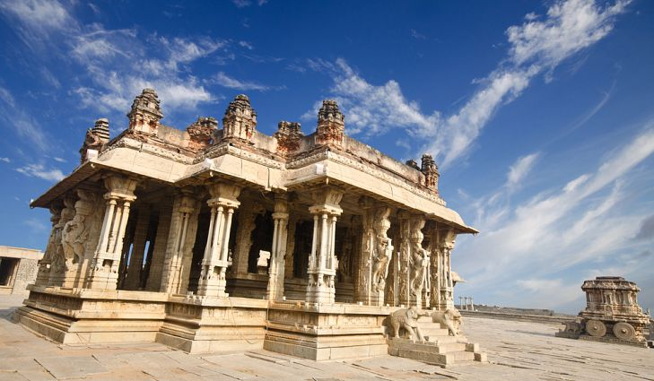

Golden Temple
|  | The Golden Temple or the Sri Harmandir Sahib is the holiest pilgrimage site of the Sikhs of the world. The temple is located in the Punjab city of Amritsar and was designed by the fifth Sikh Guru, Guru Arjan. The holy book of the Sikhs known as the Adi Granth was installed inside the Golden Temple. |
Taj Mahal

|
Perhaps there are only a few people in the world who have not heard about the Taj Mahal, the famous symbol of love. It is an ivory-white mausoleum built by the Mughal Emperor Shah Jahan for his beloved wife Mumtaz Mahal after her demise. The Taj Mahal today is the resting place of both Mumtaz Mahal and Shah Jahan. The tombs are the centerpiece of the 17-hectare complex. The Taj Mahal was probably completely built by 1653. |
Konark Temple
|  | The Konark Sun Temple is another one of the 7 wonders of India and is located in Konark, Orissa. The temple was built in 1255 CE by the East Ganga Dynasty ruler, King Narasimhadeva I. The temple is famous for its fascinating architecture and erotic sculptures. The main attraction is the sun-chariot-styled temple with elaborately carved wheels, walls, and pillars. |
Khajuraho Group Of Monuments
|  | The Khajuraho Group of Monuments is a vast complex of Jain and Hindu Temples, located in Khajuraho in India’s Madhya Pradesh state. The site has been declared as one of India’s UNESCO World Heritage Sites. The Khajuraho temples are known across the world for their erotic sculptures and elegant nagara-style architectural symbols. |
Hampi Temple
|  | Hampi is a temple town in India’s Karnataka state dotted with fascinating ancient Hindu temples and shrines. During its peak time, Hampi was one of the wealthiest cities in the world. Hampi was part of the ancient Indian kingdom of Vijayanagara whose rulers were known for their love of arts and culture, thirst for knowledge, and efficient rule. The Virupaksha Temple, the Queen’s Bath, the Vittala Temple Complex are some of the most notable temples and monuments in Hampi. |
Nalanda University

|
A large Buddhist monastery and a world-renowned center of learning between the 7th century BCE and 1200 CE, Nalanda well deserves to be one of the 7 wonders of India as well as a UNESCO World Heritage Site. Nalanda is located about 95 km from Patna, the capital city of India’s Bihar state. Nalanda is as one of the most famous universities in ancient India that was inspired by the highly organized methods of Vedic learning. |
Monolithic Gomateshwara Statue

|
A large Buddhist monastery and a world-renowned center of learning between the 7th century BCE and 1200 CE, Nalanda well deserves to be one of the 7 wonders of India as well as a UNESCO World Heritage Site. Nalanda is located about 95 km from Patna, the capital city of India’s Bihar state. Nalanda is as one of the most famous universities in ancient India that was inspired by the highly organized methods of Vedic learning. |